to plot the scatter graph and show the linear relationship of Temperature and Demand, execute following codes
library(fpp2) daily20 <- head(elecdaily, 20) daily20 <- as.data.frame(daily20) ggplot(daily20) + geom_point(mapping = aes(x = Temperature, y = Demand)) + geom_smooth(method = 'lm', mapping = aes(x = Temperature, y = Demand)) + theme_classic()
We have
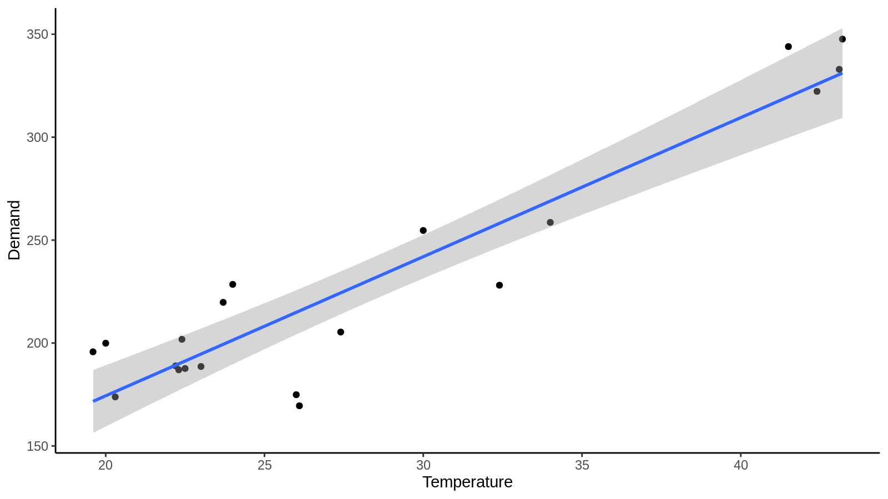
the params of the fit is
> fit <- lm(Demand ~ Temperature, data = daily20) > summary(fit) Call: lm(formula = Demand ~ Temperature, data = daily20) Residuals: Min 1Q Median 3Q Max -46.060 -7.117 -1.437 17.484 27.102 Coefficients: Estimate Std. Error t value Pr(>|t|) (Intercept) 39.2117 17.9915 2.179 0.0428 * Temperature 6.7572 0.6114 11.052 1.88e-09 *** --- Signif. codes: 0 ‘***’ 0.001 ‘**’ 0.01 ‘*’ 0.05 ‘.’ 0.1 ‘ ’ 1 Residual standard error: 22 on 18 degrees of freedom Multiple R-squared: 0.8716, Adjusted R-squared: 0.8644 F-statistic: 122.1 on 1 and 18 DF, p-value: 1.876e-09
Possible explanation of the positive relationship between Temperature and Demand is that household use more AC when weather is hot, which consume more power.
continued from above, to create a residual plot, use command
checkresiduals(fit)
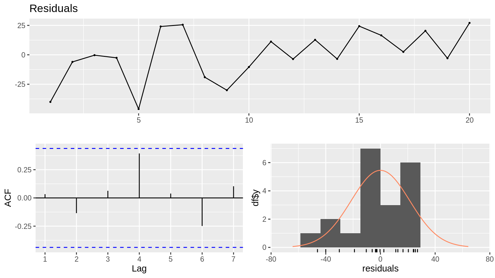
Noted, using the first 20 as training set is too small to draw a stable conclusion, considering using all of the data.
The residual plotting is showing
> predict(fit, newdata = list(Temperature = c(15, 35))) 1 2 140.5701 275.7146
the prediction of Temperature = 15 and 35 is, respectively, 140.5701 and 275.7146
the predicted value varies so largely that is highly unlikely to be accurate.
this might comes from a result of
> predict(fit.all, newdata = list(Temperature = c(15,35))) 1 2 218.6592 227.0242
the model using whole data set is much more stable.
fit <- tslm(Demand ~ Temperature, data=head(elecdaily, 20)) r <- forecast(fit, newdata=data.frame(Temperature=c(15,35))) autoplot(r)
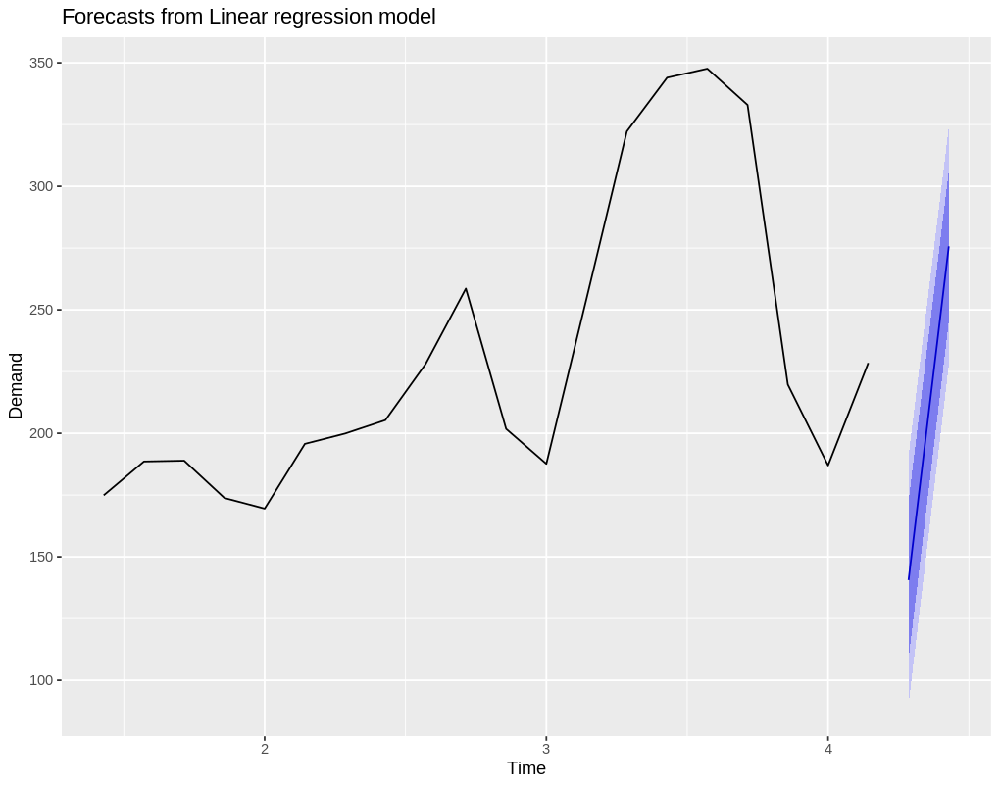
the plot is showing the prediction intervals for our forecasts
fit.all = lm(Demand ~ Temperature, data = as.data.frame(elecdaily)) checkresiduals(fit.all)
the result is shown below
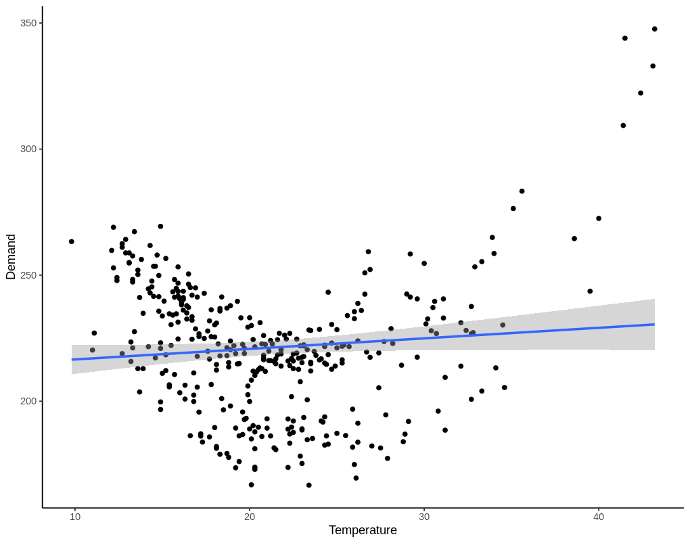
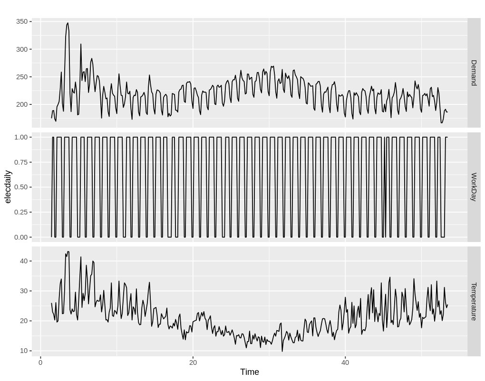
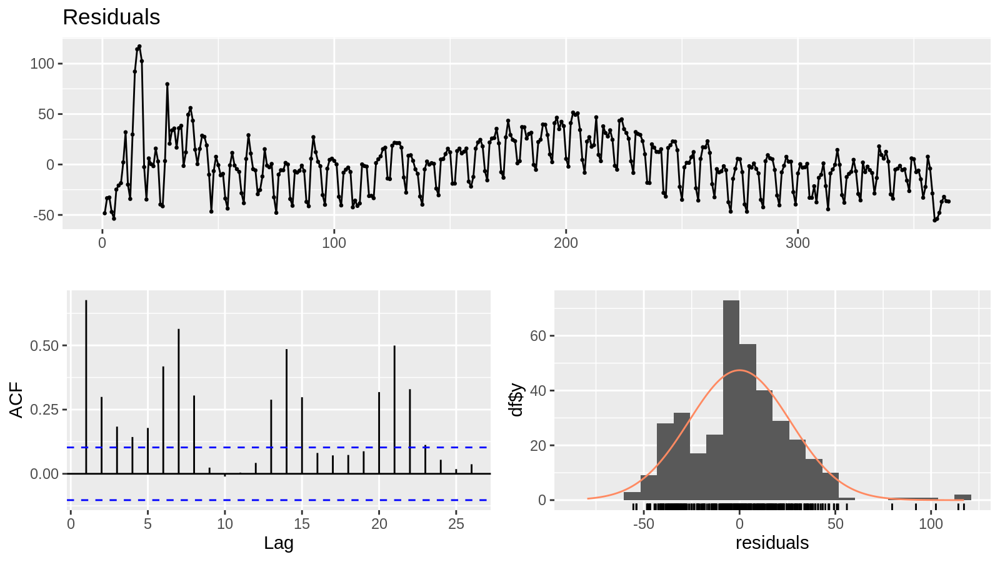
The result shows
library(fpp2) autoplot(visitors)
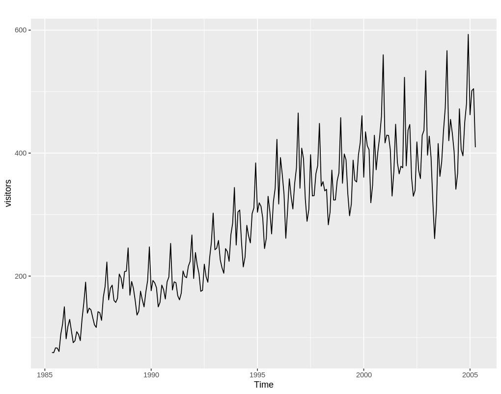
the plot shows that
continued from above
to separate training and test set
index <- time(visitors) visitors.training <- window(x = visitors, end = index[length(index) - 24]) visitors.test <- window(x = visitors, start = index[length(index) - 23])
then using hw method to fit and forecast
fit <- hw(visitors.training, seasonal = "multiplicative", h=24) forecast.mean <- fit$mean # this is the forecasted mean autoplot(visitors.training) + forecast::autolayer(visitors.test, series = "Real value") + forecast::autolayer(forecast.mean, series = "HW forecasted value") + xlab("Year") + ylab("Monthly Australian short-term overseas visitors") + guides(colour = guide_legend(title = "Forecast"))
the forecast is plotted here
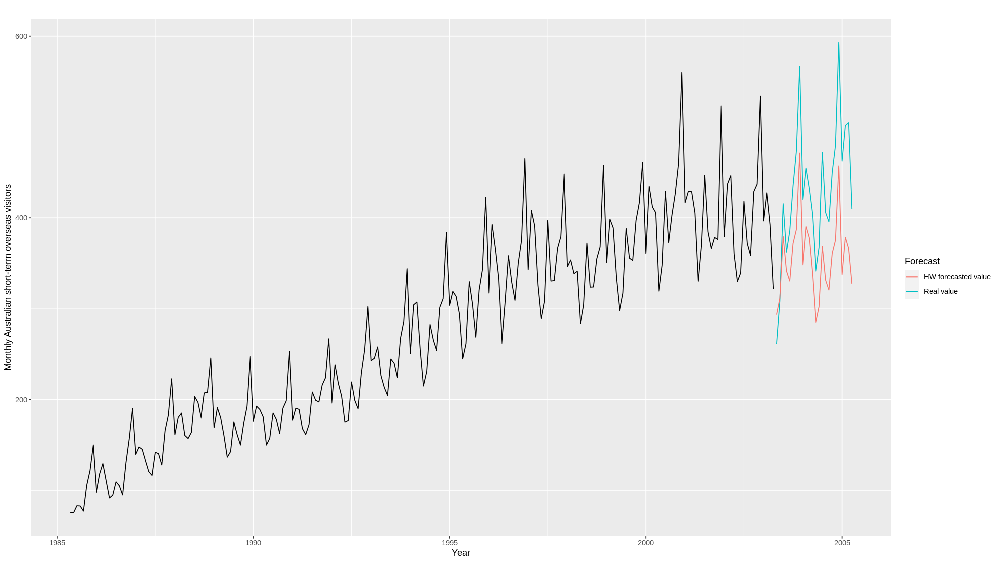
as we can see from the plotting, the seasonal components is scaling with the value of visitors. this means that seasonal component should have a multiplicative relationship with the level value.
fit.ets <- ets(visitors.training) forecast.ets <- forecast(fit.ets, h = 24) autoplot(visitors.training, main = "ETS Forecast") + forecast::autolayer(visitors.test, series = "Real Value") + forecast::autolayer(forecast.ets$mean, series = "ETS forecasted value") + xlab("Year") + ylab("Monthly Australian short-term overseas visitors") + guides(colour = guide_legend(title = "Forecast"))
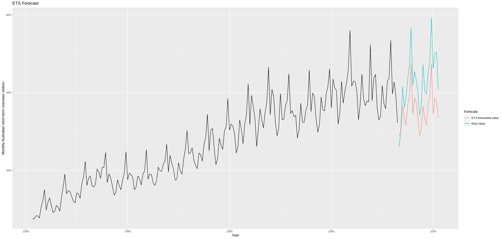
lambda <- BoxCox.lambda(visitors.training) fit.ets.transformed <- ets(visitors.training, lambda = lambda) forecast.ets.transformed <- forecast(fit.ets.transformed, h = 24) autoplot(visitors.training, main = "ETS with Box-Cox Forecast") + forecast::autolayer(visitors.test, series="Real Value") + forecast::autolayer(forecast.ets.transformed$mean, series="ETS with Box-Cox forecasted value") + xlab("Year") + ylab("Monthly Australian short-term overseas visitors") + guides(colour = guide_legend(title="Forecast"))
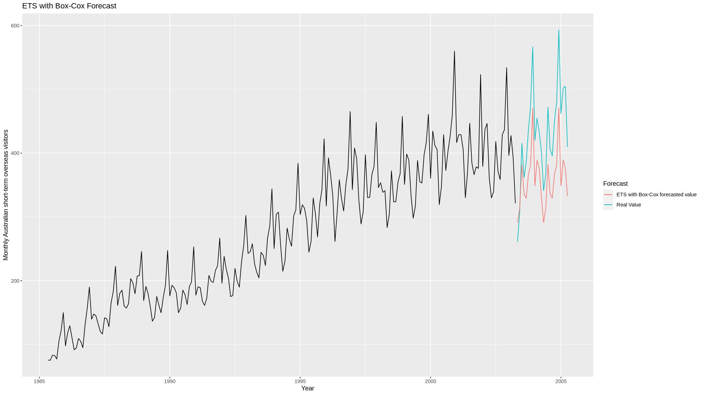
forecast.snaive <- snaive(visitors.training, h = 24) autoplot(visitors.training, main = "Seasonal Naive Forecast") + forecast::autolayer(visitors.test, series="Real Value") + forecast::autolayer(forecast.snaive$mean, series="Seasonal Naive forecasted value") + xlab("Year") + ylab("Monthly Australian short-term overseas visitors") + guides(colour = guide_legend(title="Forecast"))
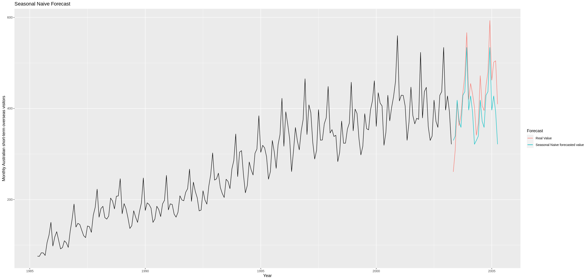
forecast.stl <- stlf(visitors.training, method = "ets", lambda = "auto", h = 24) autoplot(visitors.training, main = "STL + ETS + Box-Cox Forecast") + forecast::autolayer(visitors.test, series="Real Value") + forecast::autolayer(forecast.stl$mean, series="STL forecasted value") + xlab("Year") + ylab("Monthly Australian short-term overseas visitors") + guides(colour = guide_legend(title="Forecast"))
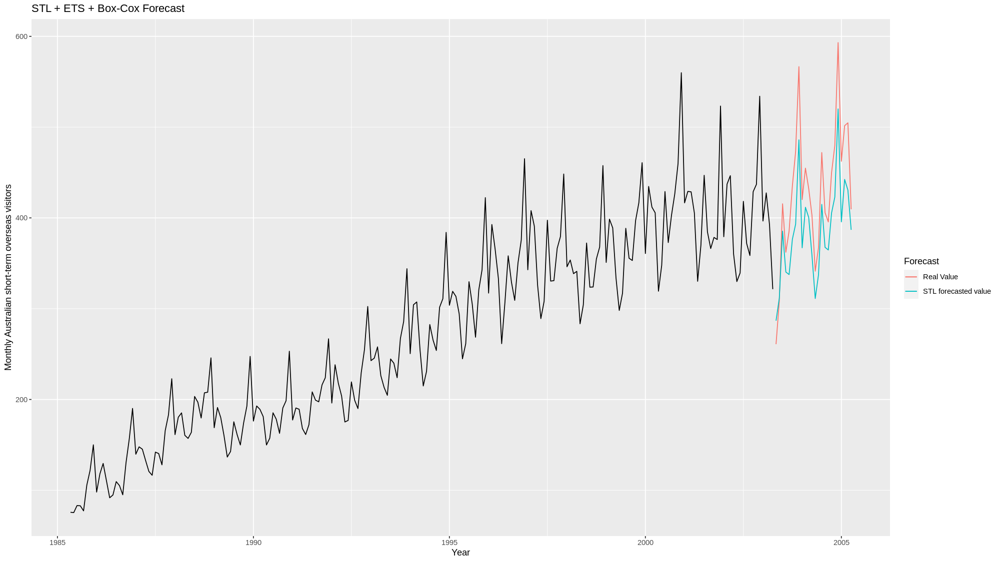
fit.arima <- auto.arima(visitors.training, stepwise = FALSE, approximation=FALSE) forecast.arima <- forecast(fit.arima, h = 24) autoplot(visitors.training, main = "ARIMA Forecast") + forecast::autolayer(visitors.test, series="Real Value") + forecast::autolayer(forecast.arima$mean, series="ARIMA forecasted value") + xlab("Year") + ylab("Monthly Australian short-term overseas visitors") + guides(colour = guide_legend(title="Forecast"))
the fitted params are
> fit.arima Series: visitors.training ARIMA(1,0,1)(2,1,0)[12] with drift Coefficients: ar1 ma1 sar1 sar2 drift 0.9447 -0.4237 -0.6599 -0.3419 1.2800 s.e. 0.0347 0.0882 0.0712 0.0723 0.4897 sigma^2 = 273: log likelihood = -862.62 AIC=1737.23 AICc=1737.66 BIC=1757.14
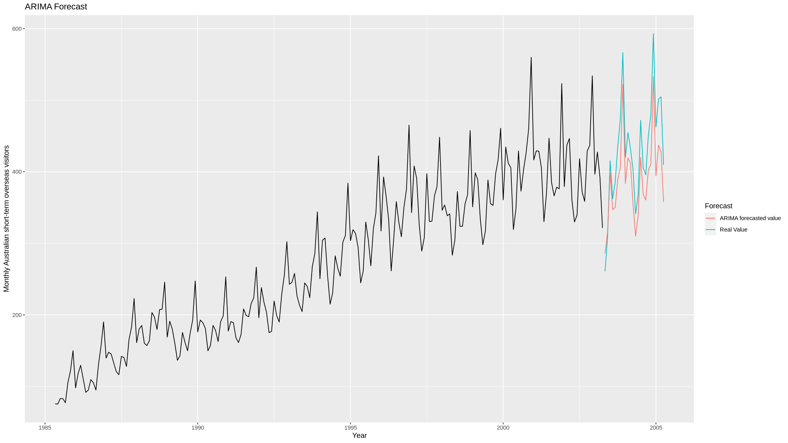
accuracy_results <- list() for (model_name in c("forecast.ets", "forecast.ets.transformed", "forecast.snaive", "forecast.stl", "forecast.arima")) { acc <- accuracy(eval(parse(text = model_name)), visitors.test)[1, ] accuracy_results[[model_name]] <- acc } accuracy_df <- do.call(rbind, accuracy_results)
the result is
> accuracy_df ME RMSE MAE MPE MAPE ACF1 Theil's U forecast.ets 72.19927 80.23124 74.55285 15.920283 16.822384 0.5871698 1.1272687 forecast.ets.transformed 69.45884 78.61032 72.41589 15.166226 16.273089 0.6768415 1.0869532 forecast.snaive 32.87083 50.30097 42.24583 6.640781 9.962647 0.5725430 0.6594016 forecast.stl 43.57059 50.15412 46.00515 9.441311 10.358083 0.5185924 0.7021056 forecast.arima 39.83320 46.35592 42.52474 8.664783 9.660810 0.6125702 0.6414468
model V, the ARIMA model, gives the best prediction accuracy, the residual check is
> checkresiduals(fit.arima) Ljung-Box test data: Residuals from ARIMA(1,0,1)(2,1,0)[12] with drift Q* = 21.119, df = 20, p-value = 0.3901 Model df: 4. Total lags used: 24
y value.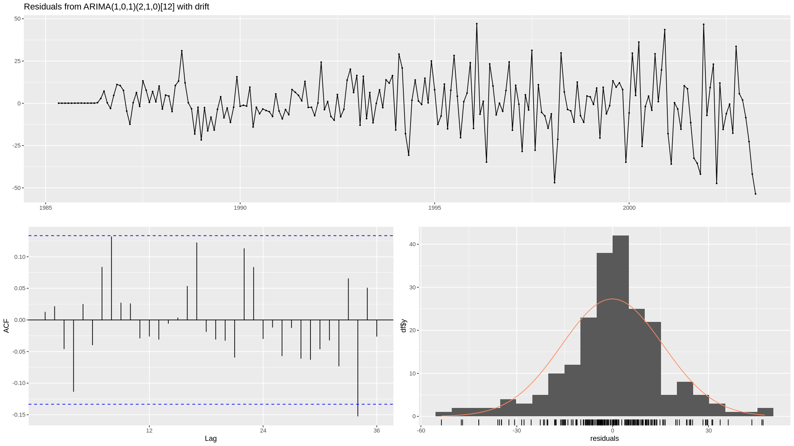
ggtsdisplay(residuals(fit.arima))
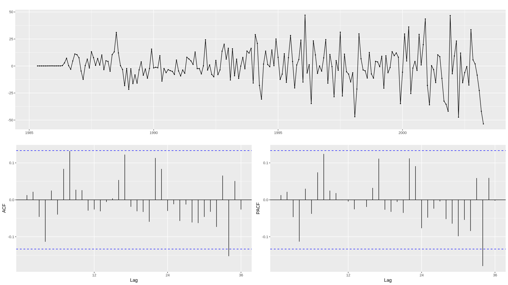
ACF analysis is showing some auto-correlation, but is long lagged, which can be ignored naturally
Note, that tsCV for auto.arima with stepwise = FALSE, approximation=FALSE is too time-costly, it is not feasible to perform on my laptop. will use default params to fit instead.
err.ets <- tsCV(visitors, function(y, h){forecast(ets(y), h = h)}) err.ets.transformed <- tsCV(visitors, function(y, h){forecast(ets(y, lambda = "auto"), h = h)}) err.snaive <- tsCV(visitors, snaive) err.stl <- tsCV(visitors, function(y, h){stlf(y, method = "ets", lambda = "auto", h = h)}) err.arima <- tsCV(visitors, function(y, h){forecast(auto.arima(visitors.training), h = h)})
mse.tsCV <- data.frame() for (err.name in c("err.ets", "err.ets.transformed", "err.snaive", "err.stl", "err.arima")) { mse <- mean(eval(parse(text = err.name)) ** 2, na.rm=TRUE) mse.tsCV[err.name, "MSE"] <- mse }
The results are
> mse.tsCV MSE err.ets 343.3552 err.ets.transformed 353.0325 err.snaive 1060.7666 err.stl 287.1763 err.arima 13126.6583
cross validation shows that stl model is having the best prediction power
forecast.combination <- (forecast.snaive$mean + forecast.stl$mean + forecast.arima$mean) / 3 acc <- accuracy(forecast.combination, visitors.test) accuracy_results[['forecast.combination']] <- acc[1, ] accuracy_df <- do.call(rbind, accuracy_results)
> accuracy_df ME RMSE MAE MPE MAPE ACF1 Theil's U forecast.ets 72.19927 80.23124 74.55285 15.920283 16.822384 0.5871698 1.1272687 forecast.ets.transformed 69.45884 78.61032 72.41589 15.166226 16.273089 0.6768415 1.0869532 forecast.snaive 32.87083 50.30097 42.24583 6.640781 9.962647 0.5725430 0.6594016 forecast.stl 43.57059 50.15412 46.00515 9.441311 10.358083 0.5185924 0.7021056 forecast.arima 39.83320 46.35592 42.52474 8.664783 9.660810 0.6125702 0.6414468 forecast.combination 38.75821 47.12375 43.24746 8.248958 9.901405 0.5791331 0.6413020
the combination prediction is showing
ME and MPERMSE and MAE is increasing